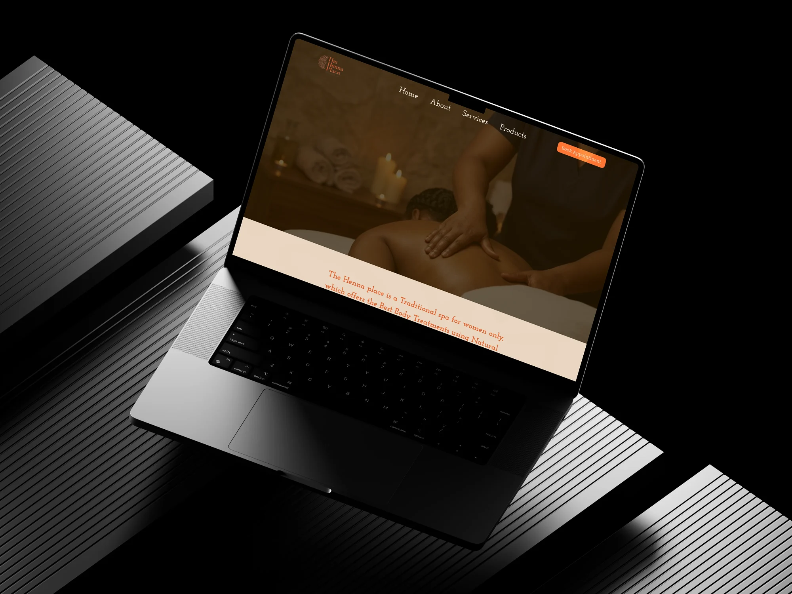
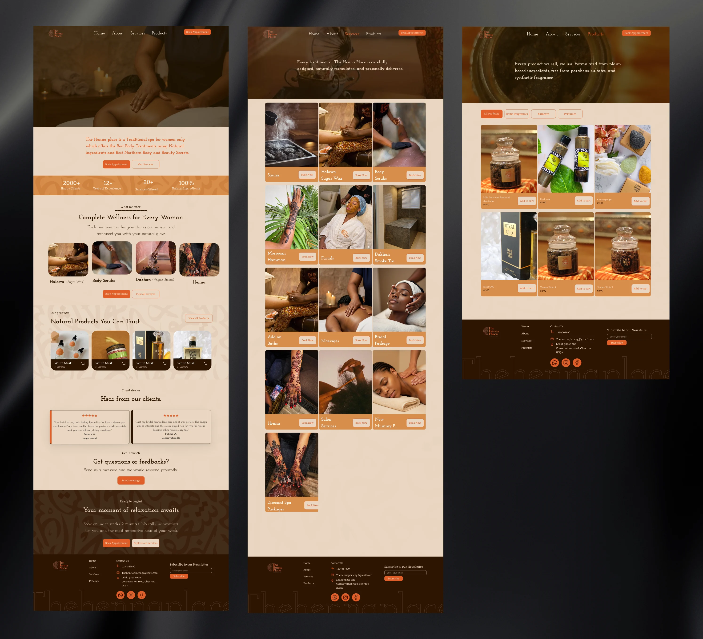
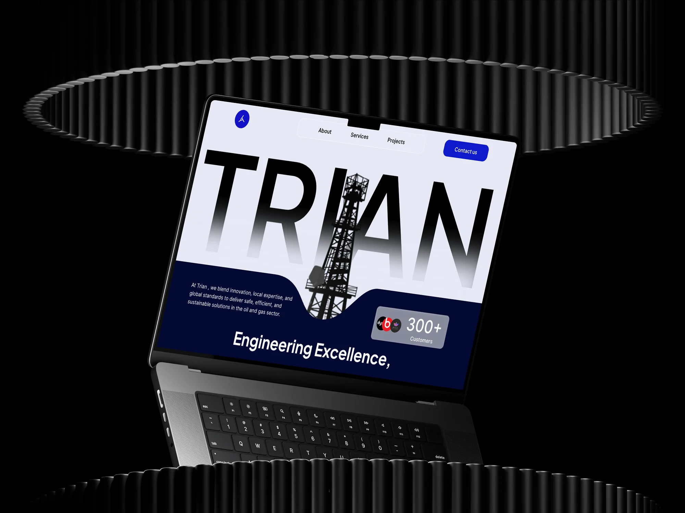
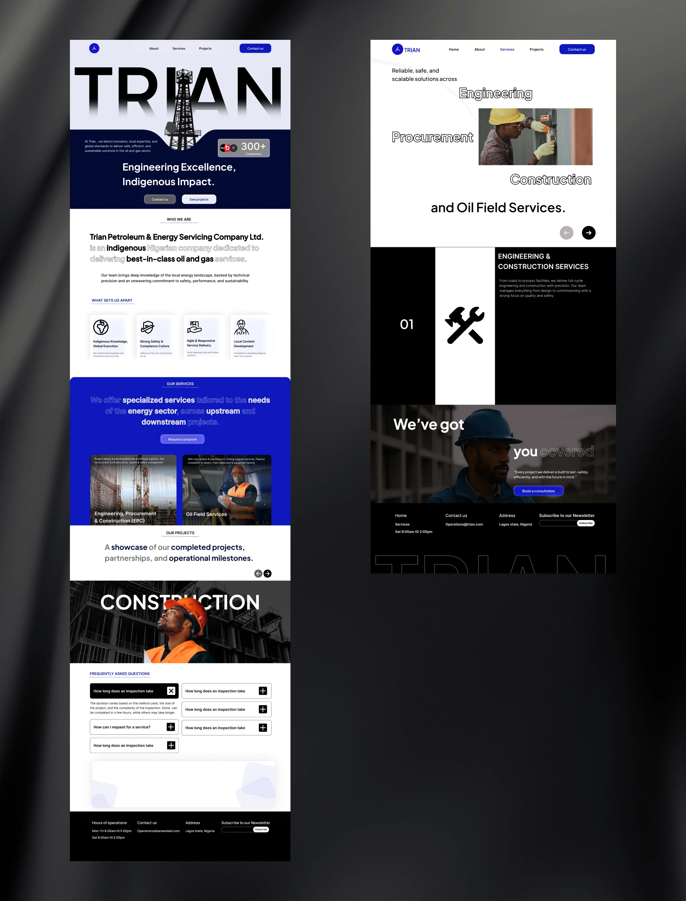

A selection of client projects where I worked across UX, product thinking, responsive web design and implementation handoff. These projects are presented more briefly than my featured case studies, but they reflect the same approach: understand the problem, simplify the experience and design something that can actually be built.
Henna Place's existing booking experience created friction between a customer deciding to book and actually completing the booking. There was also unnecessary manual work involved in managing bookings behind the scenes.
The goal was to make the experience more straightforward while reducing the amount of manual coordination required from the business.
I redesigned the booking journey around a single, obvious path — removing unnecessary steps and making the next action clear at every stage. I also considered the operational side of the experience, helping reduce the need for manual booking coordination.


Approximately 80 of 100 users completed their booking following the redesign.
This was based on client feedback rather than analytics I personally had access to. I'm presenting it as a reported outcome rather than claiming independently measured conversion data.
Conversion-focused UX
Booking flow design
Business process improvement
Responsive web design
Trian Energy needed a digital presence that communicated its business clearly while making its services and information easier to navigate. The challenge wasn't simply making the website look more polished — it was translating a complex business into an experience that a visitor could understand quickly.
I worked through the site's information architecture, content structure and navigation before translating the direction into the visual interface. Getting the structure right before any visual decisions was what made the final experience navigable.


After I came on board, the team gave feedback that the process from idea to launch moved faster compared with their previous experience.
Rather than attaching an unsupported numerical claim to that feedback, I'm treating this as a qualitative client and stakeholder outcome.
Information architecture
Complex content simplification
Responsive web design
Stakeholder collaboration & design-to-dev workflow
These are two examples from a wider body of client work.